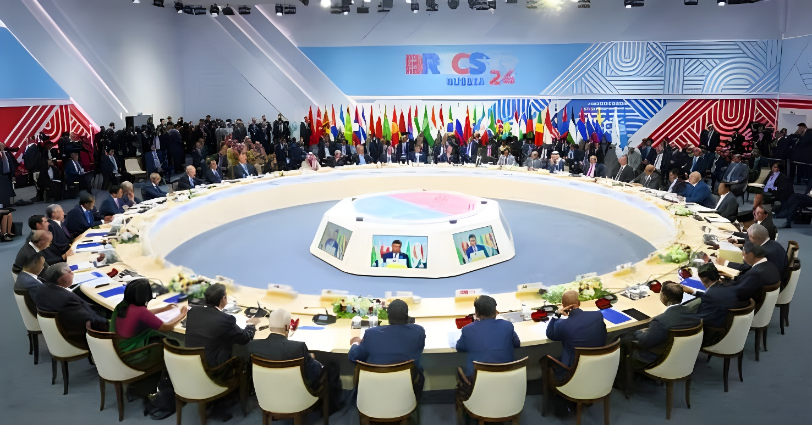

🤝Les 12 et 13 septembre 2026, l'Inde accueille à New Delhi la 18ᵉ Cumbre des BRICS. Pour la deuxième année consécutive, Cuba y participe en tant que pays partenaire du groupe, cette fois représentée non plus par le président Miguel Díaz-Canel mais par son chancelier, Bruno Rodríguez Parrilla. Entre quête de soutiens face au blocus américain et espoir déçu d'une adhésion pleine, La Havane cherche dans le Sud global un espace diplomatique que Washington lui conteste.
La relation entre Cuba et les BRICS suit une progression méthodique depuis 2023. À Johannesburg, lors du 15ᵉ sommet, l'île est conviée comme invitée spéciale : Miguel Díaz-Canel y qualifie déjà le groupe et le G77+Chine d'opportunité de « transformation historique » pour le Sud global. Un an plus tard, en octobre 2024, le 16ᵉ sommet de Kazan, en Russie, franchit une étape : Cuba est admise, avec douze autres pays, au statut de « pays partenaire » (país socio) des BRICS, une catégorie sans droit de vote mais ouvrant un accès aux enceintes du groupe.
Ce statut devient officiel le 1er janvier 2025. Cuba l'inaugure lors du 17ᵉ sommet, à Rio de Janeiro, en juillet 2025, où le président Díaz-Canel se déplace en personne et rencontre le Premier ministre indien Narendra Modi en marge des travaux. En septembre 2026, pour la deuxième participation consécutive de l'île, le niveau de représentation baisse d'un cran : c'est le chancelier Bruno Rodríguez Parrilla qui conduit la délégation cubaine à New Delhi, un choix qui reflète aussi le recul général de la présence de chefs d'État latino-américains à ce sommet, le Brésil lui-même n'y étant représenté que par son ministre des Affaires étrangères.
Au-delà des sessions plénières, consacrées au thème « BRICS : construire pour la résilience, l'innovation, la coopération et la durabilité », Bruno Rodríguez Parrilla multiplie les entretiens bilatéraux à New Delhi. Il rencontre son homologue indien, Subrahmanyam Jaishankar, son homologue brésilien, Mauro Vieira, ainsi que le Premier ministre vietnamien Le Minh Hung, avec lequel il réaffirme la volonté commune d'approfondir une « amitié spéciale » ancienne entre La Havane et Hanoï.
Ces échanges permettent au chancelier cubain de présenter les réformes économiques engagées par son gouvernement pour répondre à la crise que traverse l'île, tout en resserrant des liens avec des partenaires jugés stratégiques pour l'accès à des financements, des technologies et des marchés alternatifs à ceux contrôlés par les États-Unis.
« Cuba n'est pas une menace ; le blocus, si. »
— Bruno Rodríguez Parrilla, session plénière des BRICS, New Delhi, 13 septembre 2026Comme lors de chacune de ses interventions internationales, le chancelier cubain revient sur ce qu'il présente comme un « cerco energético » assimilable à un blocus naval de facto, et dénonce le renforcement récent des sanctions américaines ainsi que des menaces d'agression militaire contre l'île. Cette insistance porte ses fruits sur le plan textuel : la Déclaration de New Delhi, document final de 45 pages adopté par les dirigeants du groupe, consacre un paragraphe explicite à Cuba.
Le texte exprime une « profonde préoccupation » face à la situation cubaine, résultant du durcissement des mesures unilatérales de blocus, de leurs effets négatifs sur l'économie et l'approvisionnement énergétique de l'île, et de leur impact humanitaire sur la population. Les BRICS y réitèrent la nécessité de mettre fin aux mesures économiques, commerciales et financières visant Cuba, conformément à la résolution A/RES/80/4 de l'Assemblée générale des Nations unies.
Cuba est invitée spéciale au 15ᵉ sommet des BRICS, à Johannesburg (Afrique du Sud).
Le 16ᵉ sommet de Kazan (Russie) admet Cuba, avec douze autres pays, au statut de pays partenaire des BRICS.
Le statut de pays partenaire de Cuba entre officiellement en vigueur.
17ᵉ sommet à Rio de Janeiro : première participation cubaine comme partenaire, avec la présence du président Díaz-Canel.
18ᵉ sommet à New Delhi : deuxième participation consécutive, délégation conduite par le chancelier Rodríguez Parrilla.
New Delhi confirme ce que Rio avait esquissé : les BRICS offrent à Cuba une caisse de résonance diplomatique précieuse, capable d'inscrire noir sur blanc, dans un texte signé par onze puissances, une condamnation du blocus américain et un appel à son levée. Mais cette solidarité de papier ne s'accompagne d'aucun mécanisme contraignant ni d'aide financière automatique, et le statut de simple pays partenaire, sans droit de vote, rappelle que La Havane reste à la périphérie d'un club qu'elle ne pilote pas. Pour une île en pleine crise énergétique, l'exercice a surtout valeur de survie diplomatique : exister sur la photo du Sud global, en attendant que cette visibilité se traduise, un jour, en levier économique concret.
Los días 12 y 13 de septiembre de 2026, India acoge en Nueva Delhi la XVIII Cumbre de los BRICS. Por segundo año consecutivo, Cuba participa como país socio del grupo, esta vez representada no por el presidente Miguel Díaz-Canel sino por su canciller, Bruno Rodríguez Parrilla. Entre la búsqueda de apoyos frente al bloqueo estadounidense y la esperanza frustrada de una membresía plena, La Habana busca en el Sur global un espacio diplomático que Washington le disputa.
La relación entre Cuba y los BRICS sigue una progresión metódica desde 2023. En Johannesburgo, durante la 15.a cumbre, la Isla es invitada en calidad de invitada especial: Miguel Díaz-Canel ya calificaba entonces al grupo y al G77+China como una oportunidad de «transformación histórica» para el Sur global. Un año después, en octubre de 2024, la 16.a cumbre de Kazán, en Rusia, marca un salto: Cuba es admitida, junto con otros doce países, con el estatus de «país socio» de los BRICS, una categoría sin derecho a voto pero que abre acceso a los espacios del grupo.
Ese estatus se hace oficial el 1 de enero de 2025. Cuba lo estrena en la 17.a cumbre, en Río de Janeiro, en julio de 2025, cuando el presidente Díaz-Canel viaja en persona y se reúne con el primer ministro indio Narendra Modi al margen de los trabajos. En septiembre de 2026, para la segunda participación consecutiva de la Isla, el nivel de representación baja un escalón: es el canciller Bruno Rodríguez Parrilla quien encabeza la delegación cubana en Nueva Delhi, una elección que también refleja el retroceso general de la presencia de jefes de Estado latinoamericanos en esta cumbre, ya que el propio Brasil solo estuvo representado por su ministro de Relaciones Exteriores.
Más allá de las sesiones plenarias, dedicadas al tema «BRICS: construir para la resiliencia, la innovación, la cooperación y la sostenibilidad», Bruno Rodríguez Parrilla multiplica los encuentros bilaterales en Nueva Delhi. Se reúne con su homólogo indio, Subrahmanyam Jaishankar, con su homólogo brasileño, Mauro Vieira, y con el primer ministro vietnamita Le Minh Hung, con quien reafirma la voluntad común de profundizar una «amistad especial» de larga data entre La Habana y Hanói.
Estos encuentros permiten al canciller cubano presentar las reformas económicas emprendidas por su gobierno para responder a la crisis que atraviesa la Isla, al tiempo que estrecha vínculos con socios considerados estratégicos para el acceso a financiamiento, tecnología y mercados alternativos a los controlados por Estados Unidos.
« Cuba no es una amenaza; el bloqueo sí. »
— Bruno Rodríguez Parrilla, sesión plenaria de los BRICS, Nueva Delhi, 13 de septiembre de 2026Como en cada una de sus intervenciones internacionales, el canciller cubano vuelve sobre lo que presenta como un «cerco energético» asimilable a un bloqueo naval de facto, y denuncia el reciente endurecimiento de las sanciones estadounidenses, así como amenazas de agresión militar contra la Isla. Esta insistencia da frutos en el plano textual: la Declaración de Nueva Delhi, documento final de 45 páginas adoptado por los líderes del grupo, dedica un párrafo explícito a Cuba.
El texto expresa «profunda preocupación» por la situación cubana, derivada del endurecimiento de las medidas unilaterales de bloqueo, sus efectos adversos sobre la economía y el suministro energético de la Isla, y su impacto humanitario sobre la población. Los BRICS reiteran allí la necesidad de poner fin a las medidas económicas, comerciales y financieras contra Cuba, de conformidad con la Resolución A/RES/80/4 de la Asamblea General de la ONU.
Cuba es invitada especial a la 15.a cumbre de los BRICS, en Johannesburgo (Sudáfrica).
La 16.a cumbre de Kazán (Rusia) admite a Cuba, junto con otros doce países, con el estatus de país socio de los BRICS.
El estatus de país socio de Cuba entra oficialmente en vigor.
17.a cumbre en Río de Janeiro: primera participación cubana como socio, con la presencia del presidente Díaz-Canel.
18.a cumbre en Nueva Delhi: segunda participación consecutiva, delegación encabezada por el canciller Rodríguez Parrilla.
Nueva Delhi confirma lo que Río había esbozado: los BRICS ofrecen a Cuba una caja de resonancia diplomática valiosa, capaz de dejar por escrito, en un texto firmado por once potencias, una condena del bloqueo estadounidense y un llamado a levantarlo. Pero esa solidaridad de papel no viene acompañada de ningún mecanismo vinculante ni de ayuda financiera automática, y el simple estatus de país socio, sin derecho a voto, recuerda que La Habana sigue en la periferia de un club que no dirige. Para una isla en plena crisis energética, el ejercicio tiene sobre todo un valor de supervivencia diplomática: existir en la foto del Sur global, a la espera de que esa visibilidad se traduzca, algún día, en una palanca económica concreta.